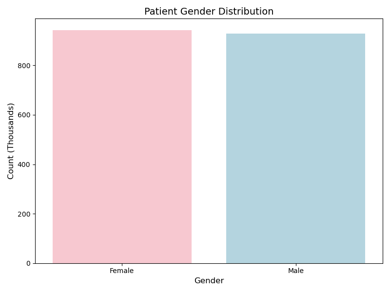
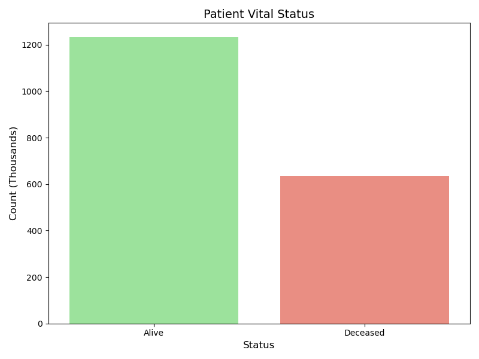
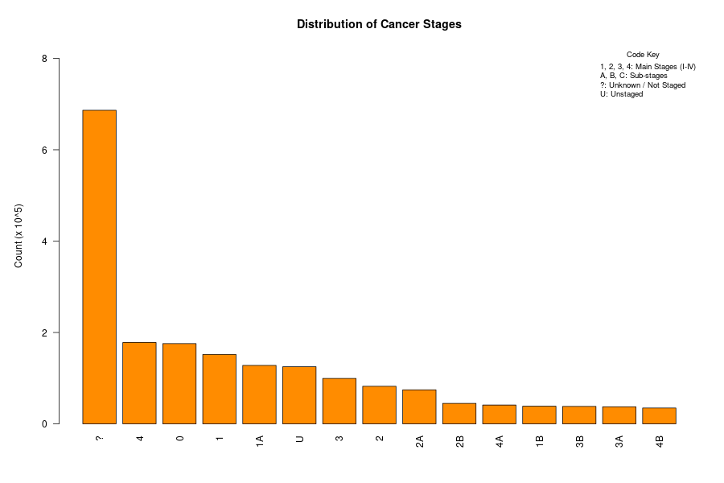

Simulacrum Data Analysis
A comprehensive biostatistical analysis of the Simulacrum v2.1.0 synthetic dataset, exploring patient demographics, tumour characteristics, and staging distributions.
Important: Synthetic Data Warning
The data analyzed in this project is entirely synthetic. It comes from the Simulacrum, a dataset derived from the National Disease Registration Service (NDRS) in England.
While it mimics the structure and statistical properties of real cancer data, it does not contain real patient information. Results from this analysis should not be compared to real-world clinical data or used to make clinical decisions.
About the Data
The Simulacrum is a tool developed by Health Data Insight (HDI) to facilitate cancer data research without compromising patient confidentiality. It allows researchers to write and test code on "safe" data that looks like the real thing.
Citation: The Simulacrum Version 2.1.0. Health Data Insight. Available at: https://simulacrum.healthdatainsight.org.uk/
Part 1: Patient Demographics
We begin by analyzing the `sim_av_patient.csv` dataset to understand the demographic composition of the cohort.
Patient Data Profiling
Before analyzing demographics, we inspected the sim_av_patient dataset to ensure
data quality and consistency.
Data Structure Snapshot
A sample of the raw records from the patient dataset:
| PATIENTID | GENDER | ETHNICITY | VITALSTATUS | VITALSTATUSDATE |
|---|---|---|---|---|
| 10000001 | 1 | A | A | 2022-07-05 |
| 10000002 | 1 | nan | A | 2022-07-05 |
| 10000003 | 2 | A | A | 2022-07-05 |
| 10000004 | 1 | A | A | 2022-07-05 |
| 10000005 | 1 | A | A | 2022-07-05 |
🛑 Pre-Analysis Data Quality Checks
1. Gender Coding
- Logic: Gender is coded as 0 (Not known), 1 (Male), 2 (Female), 9 (Not specified).
- Check: Verified distribution of codes.
- Handling: Codes 0 and 9 were retained but labeled clearly as "Not known" or "Not specified". Empty categories were removed from plots.
2. Vital Status Cleaning
- Logic: Vital status contains codes like 'A' (Alive), 'D' (Deceased), and specific death codes (D3, D4).
- Handling: All 'D' variants were aggregated into a single 'Deceased' category for clarity.

Gender Distribution
The dataset shows a relatively balanced distribution between male and female patients.
Critical Note: In real-world epidemiology, cancer incidence is rarely a perfect 50/50 split due to biological and lifestyle differences. The even balance here likely reflects the synthetic nature of the dataset or specific sampling parameters, rather than a biological truth.
This is a fundamental check to ensure the synthetic data generation process has not introduced significant gender bias, although specific cancer types (like prostate or breast cancer) are naturally gender-specific.
R Code:
# Base R
# Map gender codes
gender_map <- c("0"="Not known", "1"="Male", "2"="Female", "9"="Not specified")
df$GENDER_LABEL <- gender_map[as.character(df$GENDER)]
# Filter out empty/unknown categories
# "Ghost Label" Fix: Explicitly remove 'Not specified' if count is 0
gender_counts <- table(df$GENDER_LABEL)
gender_counts <- gender_counts[gender_counts > 0]
if("Not specified" %in% names(gender_counts) && gender_counts["Not specified"] == 0) {
gender_counts <- gender_counts[names(gender_counts) != "Not specified"]
}
# Scale to Thousands
gender_counts_scaled <- gender_counts / 1000
# Plot
# Disable scientific notation
options(scipen=999)
png("results/gender_distribution.png")
barplot(gender_counts_scaled,
main = "Patient Gender Distribution",
xlab = "Gender",
ylab = "Count (Thousands)",
col = c("gray", "lightblue", "pink", "gray"))
dev.off()Vital Status
The vital status analysis reveals the proportion of patients who are alive versus deceased within the simulation.
Methodological Warning: The number of "Deceased" patients is a function of the simulation's mortality curves and time horizon. It should not be interpreted as a measure of biological "severity" without a proper survival analysis (e.g., Kaplan-Meier curves), which accounts for time-at-risk.
R Code:
# Base R
# Clean Data: Aggregate D3, D4 etc. into 'Deceased'
df$VITAL_CLEAN <- ifelse(substr(df$VITALSTATUS, 1, 1) == "D", "Deceased",
ifelse(df$VITALSTATUS == "A", "Alive", NA))
# Remove NAs (the noise codes)
df_clean <- df[!is.na(df$VITAL_CLEAN), ]
vital_counts <- table(df_clean$VITAL_CLEAN)
# Scale to Thousands
vital_counts_scaled <- vital_counts / 1000
# Plot
png("results/vital_status_distribution.png")
barplot(vital_counts_scaled,
main = "Patient Vital Status",
xlab = "Status",
ylab = "Count (Thousands)",
col = c("lightgreen", "salmon"))
dev.off()
Part 2: Tumour Analysis
Next, we examine the `sim_av_tumour.csv` dataset to explore cancer types and staging.
Tumour Data Profiling & Quality Assessment
For the tumour analysis, we inspected the sim_av_tumour dataset, focusing on
diagnosis dates, cancer sites, and staging.
Data Structure Snapshot
A sample of the raw records from the joined tumour and patient datasets:
| PATIENTID | DIAGNOSISDATEBEST | SITE_ICD10_O2 | STAGE_BEST | VITALSTATUS | VITALSTATUSDATE |
|---|---|---|---|---|---|
| 800129 | 2016-04-12 | C50.9 | 2A | A | 2019-12-31 |
| 800130 | 2017-01-22 | C34.1 | 4 | D | 2017-08-15 |
| 800131 | 2015-11-05 | C18.7 | 3 | A | 2019-12-31 |
| 800132 | 2018-03-30 | C61 | ? | A | 2019-12-31 |
| 800133 | 2016-09-14 | D06.9 | U | A | 2019-12-31 |
🛑 Pre-Analysis Data Quality Checks
Before generating the visualizations, the following integrity checks were performed to ensure biological and temporal consistency:
1. Temporal Consistency (Time-Travel Check)
- Logic: A patient cannot die before they are diagnosed.
- Check: Verified that
VITALSTATUSDATE ≥ DIAGNOSISDATEfor all records. - Handling: Records with negative survival times (if any) were flagged as data entry errors.
2. Scope Definition (The "Skin Cancer" Trap)
- Logic: Non-Melanoma Skin Cancers (ICD-10 C44) have extremely high incidence but low mortality. Including them in aggregate rankings distorts the scale of other cancers.
- Decision: C44 cases are excluded from the "Top 10 Cancer Types" ranking to align with standard reporting (e.g., NCRAS/CRUK methodology), though they are retained for overall volume counts.
- Note: In Situ carcinomas (ICD-10 D codes) were also excluded to focus on invasive cancer burden.
3. Staging Granularity
- Observation: The dataset contains mixed granularity (e.g., Stage 1, 1A, 1B).
- Cleaning: Sub-stages were aggregated into their parent integer stages (1-4) to allow for clear high-level comparison.
- Missing Data: A significant proportion of records are marked
?orU. These were preserved as "Unknown" rather than dropped, as missing staging is a genuine feature of real-world cancer data (often correlating with patient age or rapid disease progression).
4. Code Formatting
- Standardization: ICD-10 codes were truncated to the first 3 characters (e.g., C50.9 → C50) to group subtypes into main organ systems (e.g., All Breast Cancers).

Most Common Cancer Sites
We identified the most common cancer diagnoses by grouping the ICD-10 codes.
Epidemiological Correction: We explicitly excluded Non-Melanoma Skin Cancer (C44) from this ranking. While C44 is highly prevalent, it has a very low mortality rate and is standardly excluded from "Top 10" cancer rankings to avoid skewing the data against more significant burdens like Lung or Bowel cancer.
R Code:
# Base R
# Extract 3-char code
df$SITE_MAIN <- substr(df$SITE_ICD10_O2, 1, 3)
# Filter 1: Keep only Invasive (Starts with 'C')
df_invasive <- df[grepl("^C", df$SITE_MAIN), ]
# Filter 2: Exclude C44 (NMSC)
df_final <- df_invasive[df_invasive$SITE_MAIN != "C44", ]
# Count Top 10
site_counts <- head(sort(table(df_final$SITE_MAIN), decreasing=TRUE), 10)
# Map codes to names
icd10_map <- c(
"C50" = "Breast", "C61" = "Prostate", "C34" = "Lung", "C18" = "Colon",
"C19" = "Rectosigmoid", "C20" = "Rectum", "C43" = "Melanoma",
"C67" = "Bladder", "C25" = "Pancreas", "C64" = "Kidney",
"C54" = "Uterus"
)
labels <- sapply(names(site_counts), function(code) {
if(code %in% names(icd10_map)) paste0(code, " (", icd10_map[code], ")") else code
})
# Scale to Thousands
site_counts_scaled <- site_counts / 1000
# Plot
png("results/top_10_cancer_sites.png")
barplot(site_counts_scaled,
names.arg = labels,
col = "steelblue",
main = "Top 10 Invasive Cancer Sites (Excl. NMSC)",
xlab = "Count (Thousands)",
las = 2,
horiz = TRUE)
dev.off()Stage Distribution
Staging is a critical prognostic factor. The plot shows the distribution of cancer stages at diagnosis.
Key Observation: A large portion of the data is marked as '?' (Unknown) or 'U' (Unstaged). This is a realistic feature of cancer registry data, often reflecting cases where staging was not possible due to patient health or data collection issues. It highlights the importance of handling missing data in real-world analysis.
R Code:
# Base R
clean_stage <- function(stage) {
stage <- trimws(toupper(as.character(stage)))
if(stage %in% c("?", "U", "NAN", "NA", "")) return("Unknown")
# Aggregate 1A, 1B -> 1
if(grepl("^1", stage)) return("1")
if(grepl("^2", stage)) return("2")
if(grepl("^3", stage)) return("3")
if(grepl("^4", stage)) return("4")
return("Unknown")
}
# Apply cleaning
df$STAGE_CLEAN <- sapply(df$STAGE_BEST, clean_stage)
# Ensure order: 1, 2, 3, 4, Unknown
df$STAGE_CLEAN <- factor(df$STAGE_CLEAN, levels=c("1", "2", "3", "4", "Unknown"))
stage_counts <- table(df$STAGE_CLEAN)
# Scale counts
stage_counts_scaled <- stage_counts / 1000
# Define Legend Text
legend_text <- c(
"1, 2, 3, 4: Main Stages (I-IV)",
"A, B, C: Sub-stages",
"?: Unknown / Not Staged",
"U: Unstaged"
)
# Plot
png("results/stage_distribution.png", width=900, height=600)
par(mar=c(5, 5, 4, 2) + 0.1)
bp <- barplot(stage_counts_scaled,
main = "Distribution of Cancer Stages",
ylab = "Count (Thousands)",
col = "darkorange",
las = 2,
ylim = c(0, max(stage_counts_scaled) * 1.2))
# Add Legend
legend("topright",
legend = legend_text,
bty = "n",
cex = 0.8,
title = "Code Key")
dev.off()